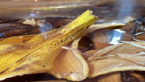
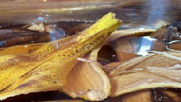

"Composing vegetable peels and using them as a fertilizer
(banana and potato peels)
The effect of banana and potato peels on the growth of Peperomia Arygemia."
A. BACKGROUND AND SIGNIFICANCE OF THE STUDY
We started this project off for Academic reasons, but after studying and seeing the problem of the community we decided to help them from the very bottom of our hearts. Our project focuses on providing them with daily necessities, like clothes, and hygiene products. We also thought about composting so their trash will help lessen the garbage around their houses, we will use the compost to plants present or will be planted so that they can live in a better environment.
When we first came up with ideas on how to help them we didn’t think that their situation would be as bad as not having clothes and not being able to take a bath properly. After visiting them personally we came up with the idea of providing them with those things. We find the study very important as it could be a very big help to the members of our partner institution. As mentioned the kids have no proper clothing. We want to change that, we want to provide them with clothing, and we want to help them because the children are the future.
B. STATEMENT OF THE PROBLEM
How will the nutrients in banana and potato peels affect the size of the Peperomia Argyreia?
C. HYPOTHESIS
If the Peperoma Argyeria would be given compost made out of potato and banana peels then the height and growth of the plant will increase.
D. REVIEW OF RELATED LITERATURE
The purpose of this project was to see how fast the Peperomia Argeyria would grow with potassium and phosphorous-enriched fertilizer by the compost we made. We know that adding these nutrients to the plant will surely help make the plant grow taller. The way potassium helps plants grow is because potassium is involved in the enzyme activation in the plant. This enzyme activation affects the protein, starch, and adenosine triphosphate (ATP) production. ATP regulates the rate of photosynthesis of plants.
II. METHODOLOGY
A. VARIABLES
Independent Variable Amount of fertilizer (potato and banana peel-based compost fertilizer) given to the plants.
Dependent Variable/s The growth difference between the 2 plants.
Constant or Controlled Variables Type of soil
Type of plant
Height of plant
Conditions of the plant (humidity, sunlight, etc.)
The amount of water it gets.
B. TREATMENTS / SET-UP
Add or remove treatment/set-up columns based on the experimental design.
Treatment/Set-up Control
Set-up Experimental
Set-up 1 Experimental
Set-up 2
Description -Loam soil
- Watering can, preferably 2 liters
- Compost We will test the quality of the compost first. The compost is made out of vegetables and fruits so we believe it will be a good quality compost. Now we will check the compost, to do that we will check the texture, how moist it is and how it smells. Once that is finished the effect of the compost should be visible on how the plant grows, and the soil of the plant should be more suitable for the plant. The second set-up will be the peperomia Argyreia. The peperomia Argyreia will be the one receiving the effects of the first experimental setup, once it has received it, it should be healthier compared to the ones that haven’t.
No. of Trials or Replicates 2 3
C. EXPERIMENTAL DATA TO BE MEASURED OR OBSERVED
Experimental Measurement or Observation Description of Measurement or Observation Significance of Observation
The height of the plant The height of the plant will be measured every 5 days. The height of the plant should be kept in check to see if the plant is growing right.
Percent of carbon and magnesium present in the soil. We will have it tested in a laboratory every month. We will also keep track to see if it has increased or decreased. These two are only some of the most important nutrients for the soil, we should have them checked every once in a while to see the progress of plant growth.
D. MATERIALS AND EQUIPMENT NEEDED
Add rows to the table if needed.
Materials and Equipment Quantity Needed Description of Use Specifications or Criteria for Materials and Equipment
Soil 1 ½ kg
Potato and banana peels 3 kg For composting n/a
Mini shovel 1 pc For mixing the materials n/a
Containers 5 pcs To place the mix in and put the final product in n/a
Water Around 5 liters It helps with the decomposition n/a
E. PROCEDURES FOR TESTING AND GATHERING/OBTAINING DATA
Remove the row if the section does not apply to the research.
Section Step-by-Step Procedure
Producing or Sourcing the Compost Material We will gather the materials from our perspective houses and if the members of the community have some we will use them too.
1. We will mix the potato and banana peels.
2. Add the water
3. Then place it in its container, cover it and leave it until it settles, around 3 days should be enough.
Sourcing and Preparing the Test Plants and Plant Soil
First, we will check if the compost is ready to do that we must observe the color, how moist it is, and its structure. Then if it is prepared enough we will mix it in with the soil of the plant we will be experimenting on.
Making observations and/or measurements about the Compost
We will make observations of the compost-soil mixture, and to do that we will attain all sorts of information such as how it affected the growth of the plant. We will be seeing if it is suitable for the plant and if it did or did not give good progress to the growth of the plant. That way we can see if the compost is effective.
Dosage and Frequency of Compost Application to the Test Plants Every month we will give at least 1 kg of compost to the plant.
Making observations and/or measurements about the Test Plants We will observe it every 2- 3 weeks, when the plant starts growing we will measure its height every 3 weeks, the plant we are trying to grow should at least grow up to 12 inches therefore growing it to that height while it is healthy is our goal.

 
